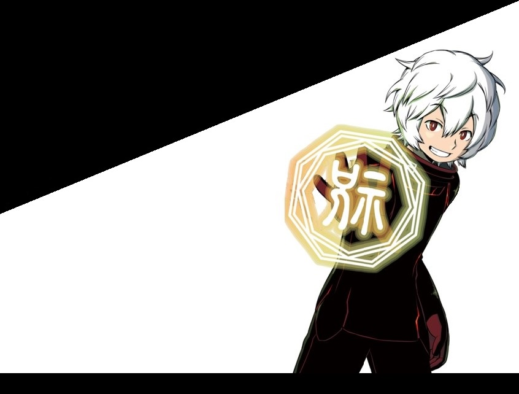

World Trigger

Ficha Técnica
World trigger es un manga y un anime Shōnen del genero acción, comedia y ciencia ficción escrito por Daisuke Ashihara. El manga publicó su primer tomo el 9 de febrero de 2013 por la editorial Shueisha y el manga su primera emisión fue el 5 de octubre de 2014 por Toei Animation.
Argumento
La obra de ciencia ficción trata la existencia del multi-verso, siendo la trama principal desarrollada en nuestro universo (donde el desarrollo de la tecnología ha seguido el mismo curso). Siendo nuestro universo invadido por los habitantes del multi-verso también llamados neighbors, los cuales han descubierto una propiedad nueva ne los humanos y creando tecnología alrededor de esta. Dicho descubrimiento es el Trion, una energía creada por un órgano invisible llamado glándula Trion situado muy próximo al corazón, cuyas aplicaciones son muy diversas; en las que se encuentran entre una de ellas la capacidad de crear un portal entre multi-versos.
Obligando asi a los humanos de nuestro multi-verso ha crear una nueva organización Border, encargada de adaptar la tecnología neighbors; como también de desarrollarla la suya propia. Para poder responder a las sucesivas invasiones. Siendo a su vez un cuartel general, donde se forman a soldados, se realizan defensas coordinadas, expediciones,...
Personajes
Osamu Mikumo

Osamu Mikumo
Un agente de Border con un nivel bajo de Trion, apodado cariñosamente"cuatro ojos" por sus gafas. Se alistó en Border como un tirador y el líder de la óUnidad Mikumo (su propia unidad) gracias a su gran intelecto y a su devoción de hacer siempre lo correcto. Con el objetivo de proteger ha Chika, pues su hermano mayor y tutor de Osamu ha desaparecido, sopechando que ha sido raptado por los neighbors.
Yūma Kuga
Yūma Kuga
Neighbors con una gran destreza en el combate y deconocedor de costumbres japonesas, lo que conduce a confusiones respecto a la actitud que debe tomar con la sociedad. Cuando era joven, él y su padre Yugo Kuga estaban en una guerra en el mundo Neighbor. En mitad de la guerra su padre le dijo que no lo siguiera, Yuma desobedeció, yendo a escondidas a la batalla, lo que le causó la muerte. Su padre, encontrando su cadáver, sacrificó su vida para crear un Black Trigger para revivir a Yuma obtuvo tambien un side effects que le permide detectar si alguien le miente. Réplica, le dijo que fuera al mundo humano y ver si Border podría encontrar una cura para su condición. Uniendose a Border como atacante en la Unidad Mikumo. Recibió el apodo de "Diablo Blanco" debido a su pelo blanco y su ferocidad en la batalla.
Réplica
Réplica
Es un Soldado Multi-tarea Trion que hace el papel de Guardián de Yūma, creado por su padre para protegerle y enseñarle. Entre sus multi-tareas se encuentra analizar Trion y reproducionlos; de este modo puede crear copias de solodados Trion enemigos como aliados, como tambien de sus armas.
Chika Amatori
Chika Amatori
Una chica con un enorme nivel de Trion, que atrae a los soldados de Trion hacia ella. Su hermano y amigo Rinji ha desaparecido con sospechas de que hallan sido raptados por los Neighbor. Se mantiene alejada los demás porque tiene miedo de que sean raptadas la personas de su alrededor. Cansada de huir se alista en Border como una francotiradora en la Unidad Mikumo para buscar una manera de rescatarlos y enfrentarse a los neighbors. Ella también tiene un side effects que le permite sentir la presencia de los Soldados de Trion y ocultar su presencia de ellos. Es apodada "Monstruo de Trion", debido a su gran cantidad de Trion.
Yūichi Jin
Yūichi Jin
Yūichi es un Atacante Clase-S en Border con un side effects premonitorios. Es una persona muy amable y sin preocupaciones. Es apodado "Agente Elite", pero sus habilidades en batalla son más que suficientes para respaldar su exceso de confianza. Su madre fue asesinada por los Neighbors, pero a pesar de eso, él no odia a los Neighbors, ya que ha estado en otro multi-verso y sabe que no todos los Neighbors son malos. Él fue quien invitó a unirse a Yūma a Border. Su mentor Soichi Mogami se sacrificó su propia vida para crear un Black Trigger, que le dejó a Yūichi, y más tarde lo entregó a Border para queYūma podría unirse a este mismo.